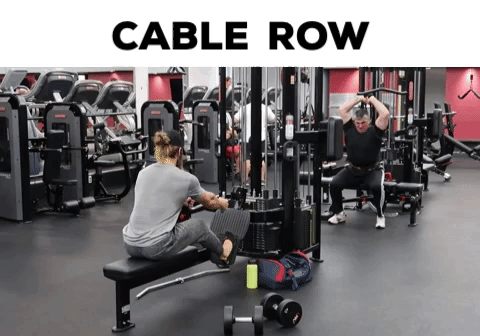

For this exercise you will need access to a low pulley row machine with a V-bar. Note: The V-bar will enable you to have a neutral grip where the palms of your hands face each other. To get into the starting position, first sit down on the machine and place your feet on the front platform or crossbar provided making sure that your knees are slightly bent and not locked.
Lean over as you keep the natural alignment of your back and grab the V-bar handles.
With your arms extended pull back until your torso is at a 90-degree angle from your legs. Your back should be slightly arched and your chest should be sticking out. You should be feeling a nice stretch on your lats as you hold the bar in front of you. This is the starting position of the exercise.
Keeping the torso stationary, pull the handles back towards your torso while keeping the arms close to it until you touch the abdominals. Breathe out as you perform that movement. At that point you should be squeezing your back muscles hard. Hold that contraction for a second and slowly go back to the original position while breathing in.
Repeat for the recommended amount of repetitions.
Caution: Avoid swinging your torso back and forth as you can cause lower back injury by doing so.